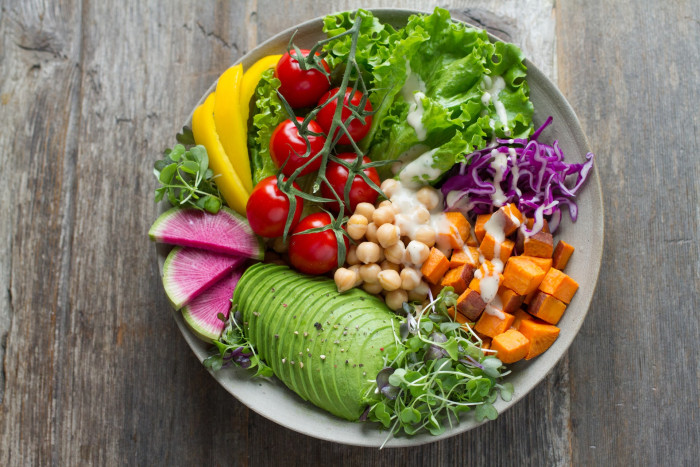
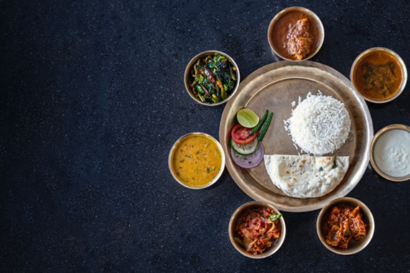
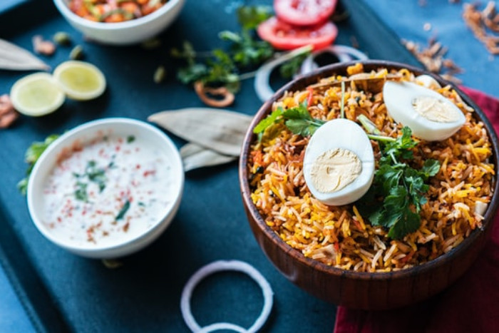
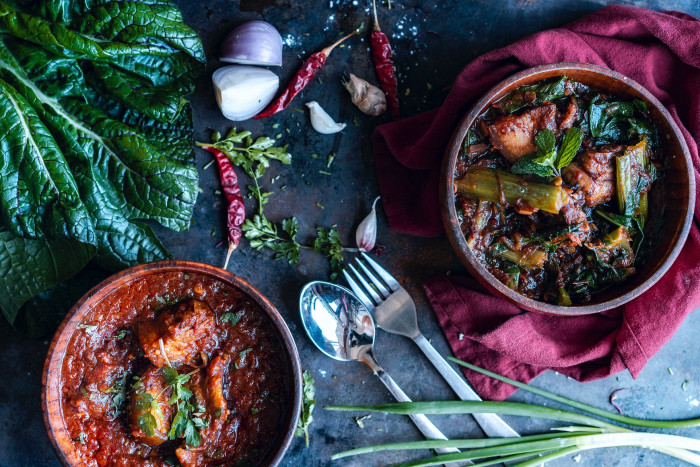
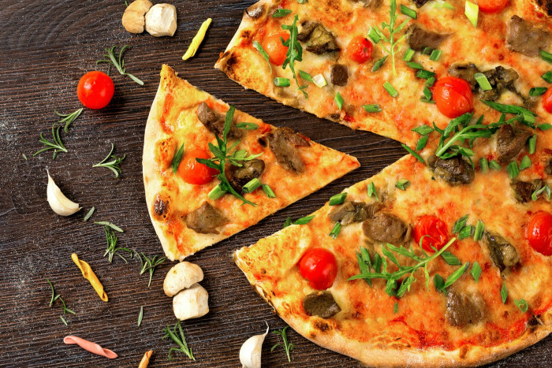

Go to the main content
×
Warning! Sito web in fase di sviluppo. Migliorerà !!

Le vie dei Casari
Piccoli Caseifici, Grandi Formaggi





L’obiettivo del progetto è avvicinare un pubblico vasto alla cultura Casaria, ponendo particolare attenzione alle piccole aziende e
cooperative che controllano e gestiscono l’intera filiera produttiva, dal pascolo, all’allevamento fino alla produzione di formaggio.